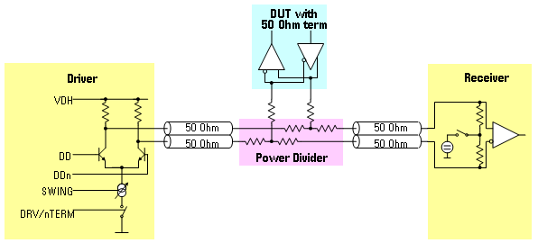
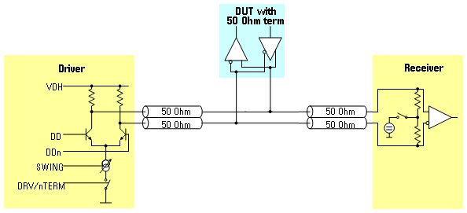
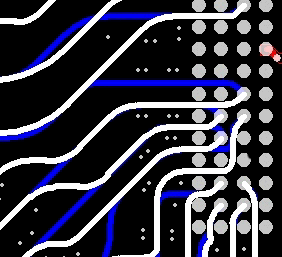

Bidirectional layout example
Bidirectional layout presents the challenge of connecting a bidirectional DUT I/O to a unidirectional pin electronics. There are two typical approaches: power divider and fly-by.
The graphics below show both concepts.


The power divider approach, although not having any impedance discontinuity, has the disadvantage of requiring the addition of components that does not allow the joining point to be close to the DUT.
The fly-by approach has an impedance discontinuity at the joining point, but this joining point can be implemented very close to the DUT I/O pad.
The graphic below shows an example of a bidirectional fly-by layout.

Drive and receive signals are routed in adjacent layers. Only at the socket via they are joined.
This reduces the discontinuity to the DUT to the possible minimum and minimizes turn-around time.
Functional changes
- Introduced before SmarTest 6.3.2